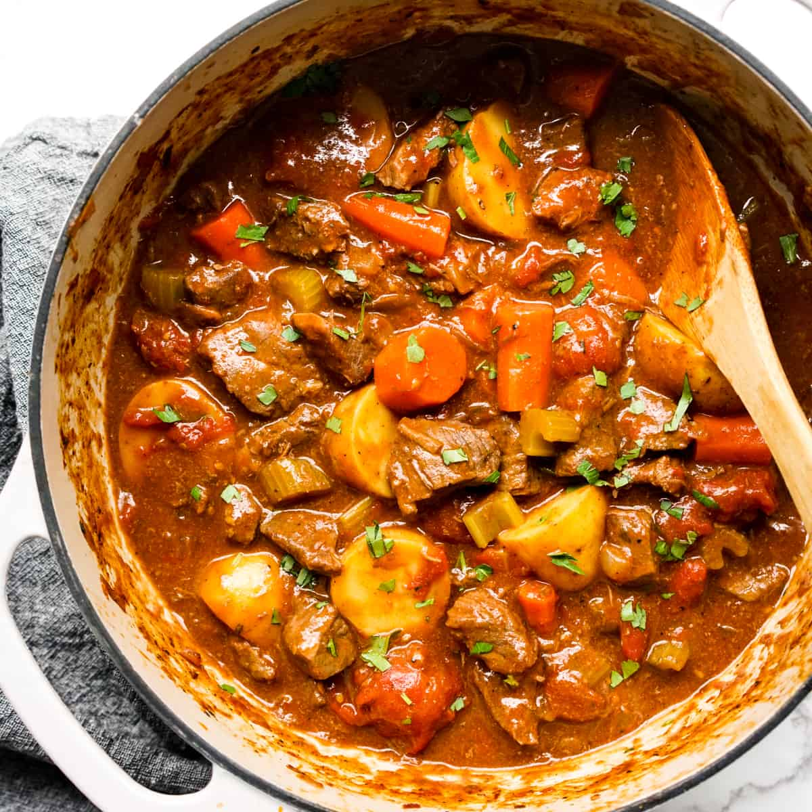

Back to Homepage
Classic Kenyan beef stew

A savoury beef stew recipe that will leave your taste buds satisfied!
This Kenyan beef stew recipe, commonly referred to as Tumbukiza has been passed down
and refined for over 10 generations! The ingredients are locally available worldwide
and the recipe is so easy to follow anyone can make it at the comfort of their home. No special equipment
is needed and no prior experience is required (other than how to use a knife).
Join me as I take you through the steps of how to make a simple but delicious kenyan style beef
stew that all your friends and family will appreciate and beg for seconds!
Ingredients
- 1/2 kg beef, cut into bite sizes
- 1 cup of water
- 4 tablespoons vegetable or olive oil
- 1 big red onion or 2 small ones, diced
- 5 garlic cloves, minced
- 1 inch fresh ginger, minced
- 3-4 fresh tomatoes, diced
- 1 teaspoon tomato paste
- 2 carrots, diced
- 5 small potatoes, diced
- 3 Bay leave
- ½ teaspoon paprika powder
- ½ teaspoon curry powder
- Salt and fresh ground pepper to taste
- Fresh coriander for garnishing
Instructions
- In a saucepan, place meat, ginger, garlic and 1 cup of water.
Boil the meat for roughly 30 minutes on medium heat
- Separate meat from broth and set aside
(you’ll need the broth later for the stew)
- In a separate saucepan, heat vegetable oil on medium heat, fry onions till soft.
Add beef and fry till it starts to brown. Add tomatoes and tomato paste and cook till the fresh tomatoes have softened.
Add the spices; curry powder and paprika and mix well.
Let the mixture simmer for a minute or two for the spices to mix well with the beef.
- Add carrots and potatoes and stir well, again let the mixture simmer about five minutes stirring each minute to avoid sticking in the pan.
Once everything has mixed in well add the broth you had set aside earlier.
Stir well and throw in the bay leaves, lower the heat to low and Simmer for about 45 minutes or until the meat is tender stirring from time to time.
Season with salt and pepper
- Ganish with fresh corinder and serve hot with rice, ugali or chapati.